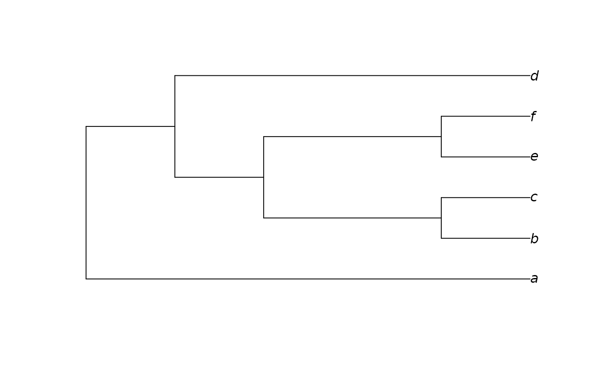

Constructs an approximation to a neighbour-joining tree, modified in order to be consistent with a constraint. Zero-length branches are collapsed at random.
Arguments
- dataset
A phylogenetic data matrix of phangorn class
phyDat, whose names correspond to the labels of any accompanying tree.- constraint
Either an object of class
phyDat, in which case returned trees will be perfectly compatible with each character inconstraint; or a tree of classphylo, in which each node inconstraintwill occur in the returned tree. See vignette for further examples.- weight
Numeric specifying degree to up-weight characters in
constraint.- ambig, ratio
Settings of
ambigandratioto be used when computingHamming()distances between sequences.
See also
Other tree generation functions:
GenerateTree,
NJTree(),
TreeNumber,
TrivialTree
Examples
dataset <- MatrixToPhyDat(matrix(
c(0, 1, 1, 1, 0, 1,
0, 1, 1, 0, 0, 1), ncol = 2,
dimnames = list(letters[1:6], NULL)))
constraint <- MatrixToPhyDat(
c(a = 0, b = 0, c = 0, d = 0, e = 1, f = 1))
plot(ConstrainedNJ(dataset, constraint))
